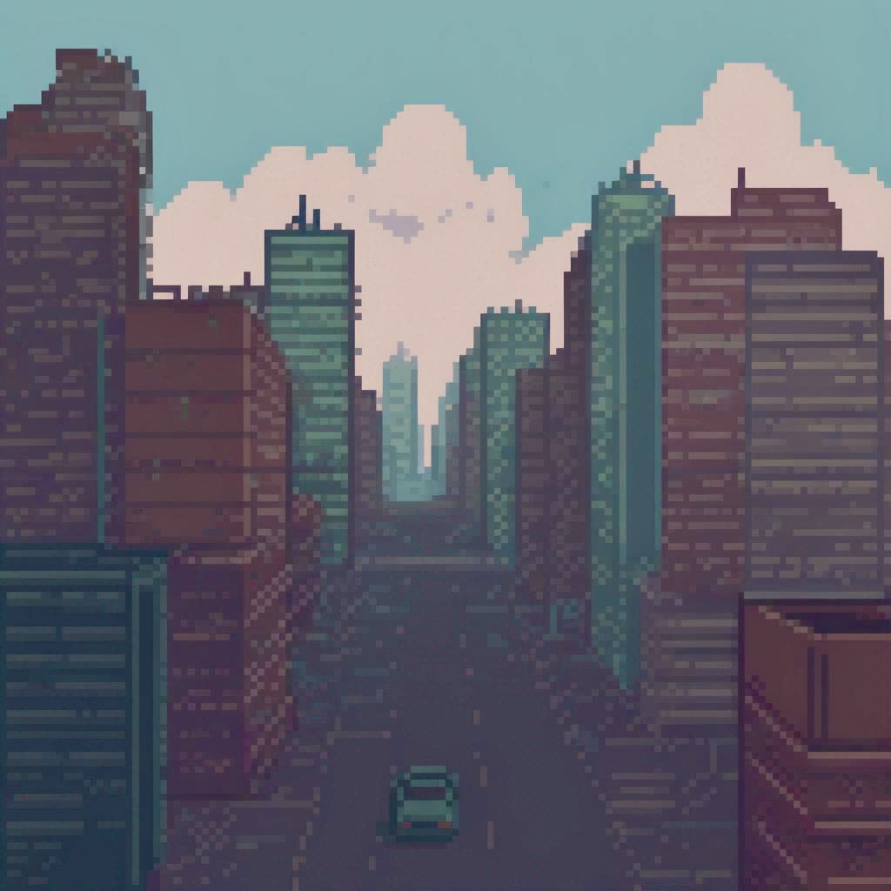

Here, you may find all of my artwork that I considered worthy of putting in a website.
Starting off with the art I am most proud of, a classical background that gives me the creeps but makes me wonder why did I decide to put one singular car in the middle. Perhaps it was to showoff the peaceful nature of coming back home from work/school, expecting a nice table ready to serve dinner, and a cozy atmosphere after a long, stressful, perhaps maybe even fun day and definitely expecting a celebration to a day that almost comes to an end that lacks some kind of a reward.
